TEC shared workspace standard
A common setup for filters, menus, printing, buttons, icons, headers and footers. The approved DIN/Dubai typography, palette and status treatments remain the baseline.
This review adds shared component arrangements and behavior. Before images show the actual v129 app using illustrative data; after images show the isolated proposal. The app release is unchanged.
| Component | Proposed setup | Shared scale |
|---|---|---|
| Header | Official logo, title/date/scope, three primary destinations and one application menu. Keep the Google search-home exception. | 38px DIN title; 14px Dubai context; 192px report logo |
| Filters | Visible sector → unit → entity. Five project-specific filters under «المزيد من التصفية». Live selection, scope summary and filters-only reset. | 12px labels; 16px values; minimum 72px fields; Paper/Taupe |
| Menus | Grouped links/commands, one open popup, outside/Escape dismissal and correct keyboard focus. Mobile filters use a modal sheet. | 16px options; 44px targets; 12px desktop popup corners |
| Buttons | Primary Teal/Paper, secondary Paper/Teal, stable hover/focus/disabled/loading states. Informational statuses keep their own treatment. | 16px Dubai; minimum 44px; 8px corners and icon gap |
| Icons | Reuse the existing outline SVG family; every icon action has a name. Named print settings use the existing chevron. | 20px icons inside 44px targets |
| Printing | Direct print plus optional settings. Full first header, compact continuation context, repeated table headings and context/page footer. Entity selection remains applied but its field stays hidden. | A4 landscape, 10mm margins; body 13.5pt; continuation 16pt; footer 10.5pt |
| Footer | Source file, calculation date and legal line consistently visible on screen. Exact definitions above it. Filename stays screen-only. | 14px Dubai Ink; shared 48/32/16px gutters |
Before and after
Open any full-size image to inspect the original pixels. The boards retain the same native scale on both sides; browser fitting may reduce their on-screen display.
Monthly header and navigation
Shared navigation, named print actions and three visible scope fields. Approved title size remains 38px.


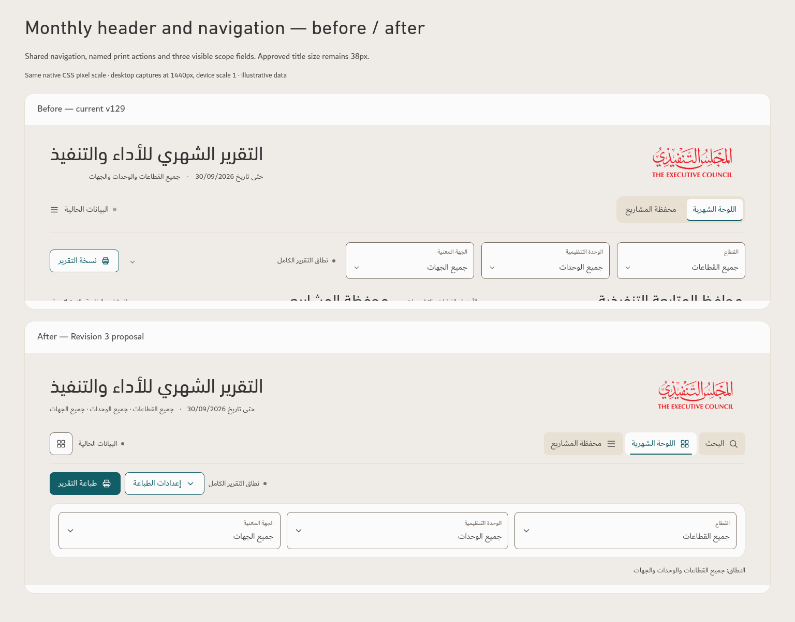
Projects header and navigation
Separate primary navigation from task actions. Show the core scope fields while keeping the five additional project fields in a disclosure.


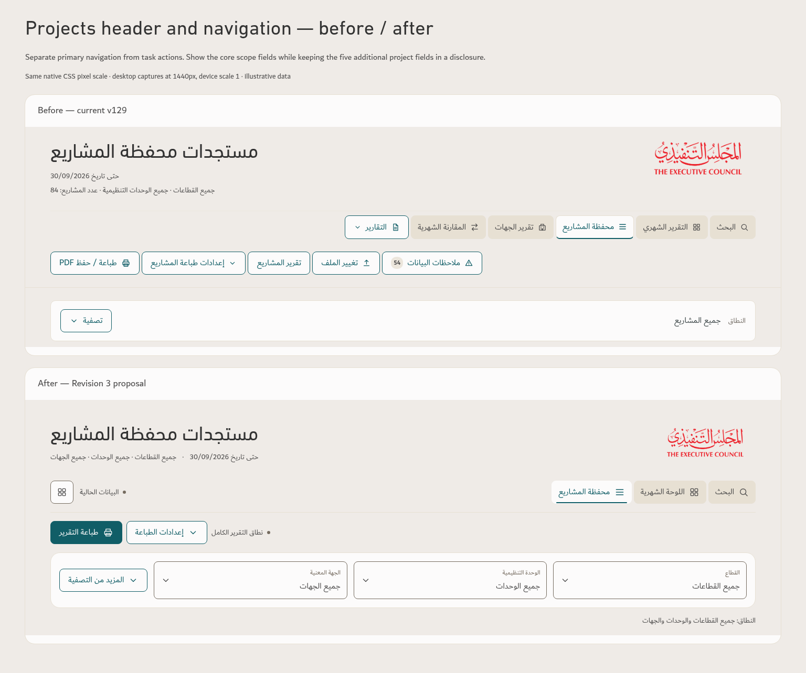
Expanded filters
The same three core fields stay visible. Additional filters expand below them without duplicating the core fields.


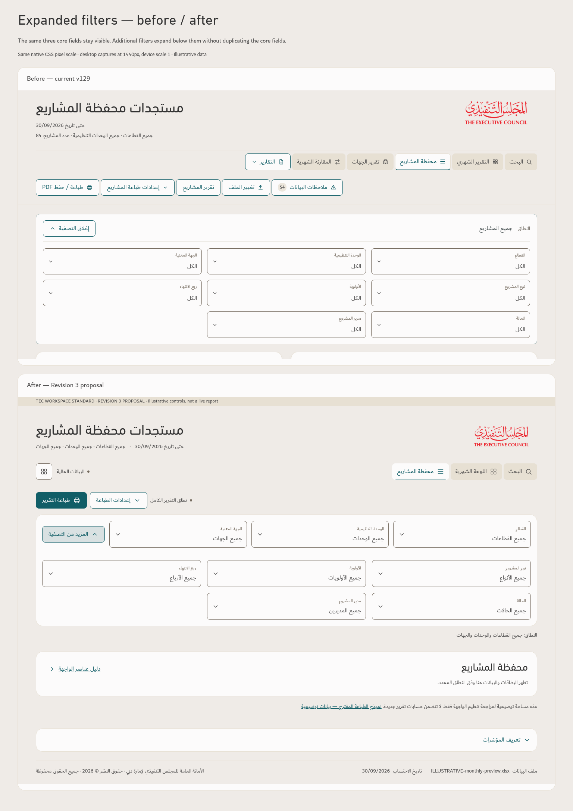
Filter popup
Paper surface, native checkboxes, live scope, 16px option text and 44px close/bulk controls. Outside and Escape dismissal are preserved.


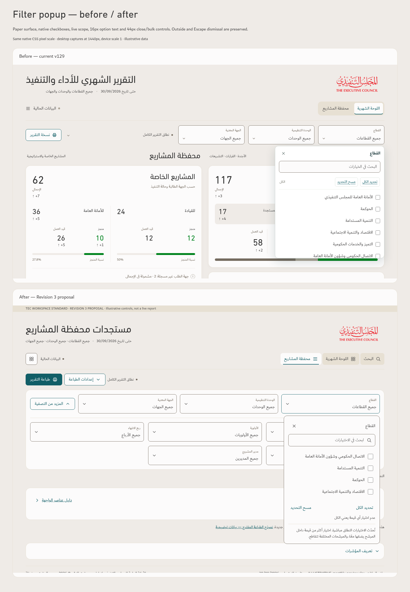


Buttons, states and icons
The approved button recipes remain. The proposal applies them consistently to task actions, menu rows, close controls and existing 20px icons.


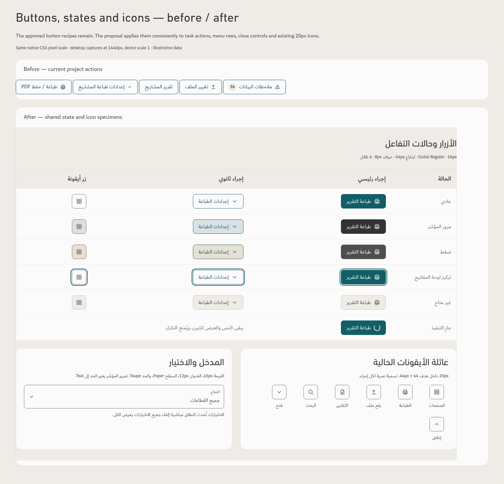
Print settings
Use one optional settings dialog with a 28px DIN title, 16px values and 44px close control. The main print action opens native printing directly.


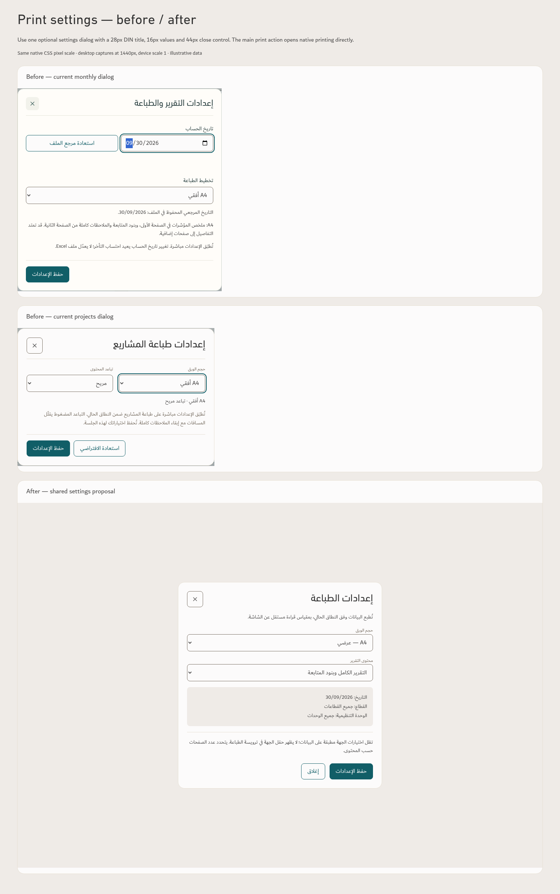


Search header and footer
Keep the approved Google-style search composition. Adapt the same top navigation, application menu and source footer without a second report masthead.


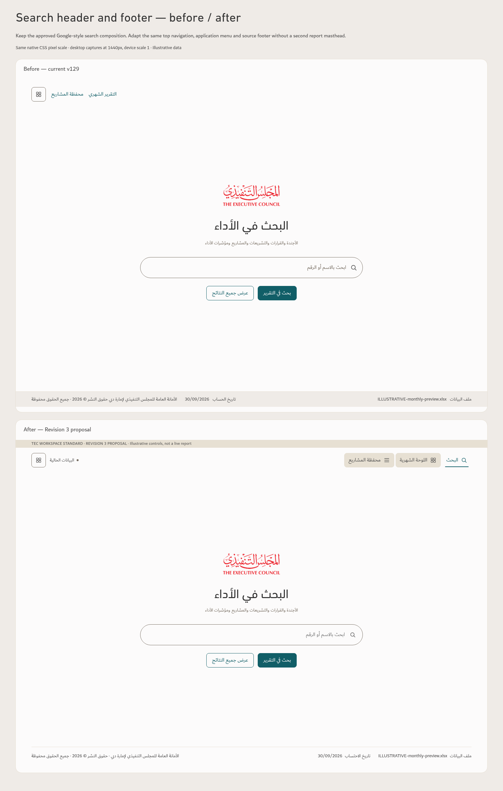
Printing — first header, continuation and footer
The supplied PDF was checked page by page. The proposal addresses missing continuation context and undersized labels while retaining the approved print scale. This three-page component specimen uses eight frozen illustrative rows; it is not a complete export or a target page count.

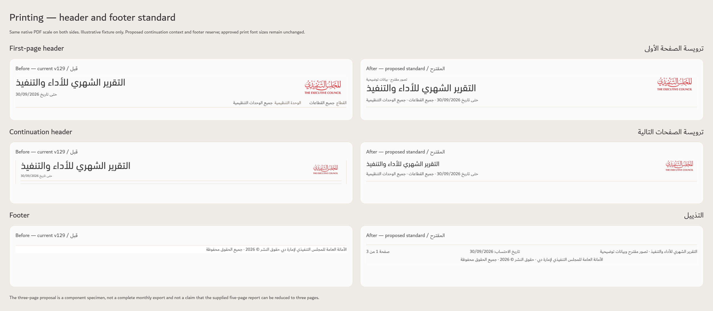
Mobile and selected scope
These proposed controls retain readable text and 44px targets. Selection is live; closing a sheet or extra filters keeps the scope.

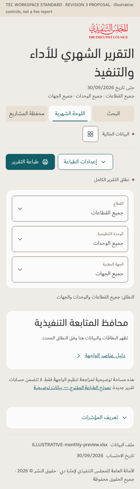

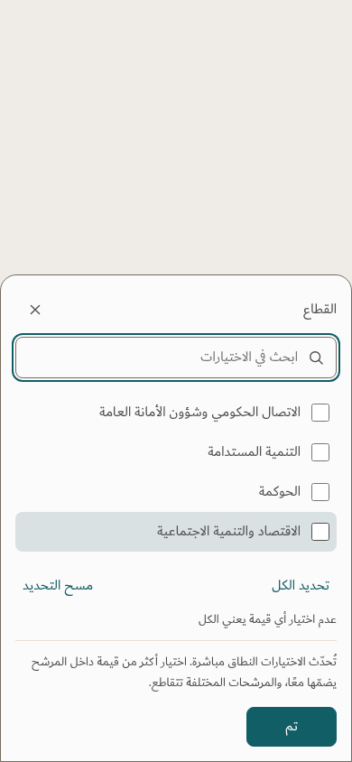

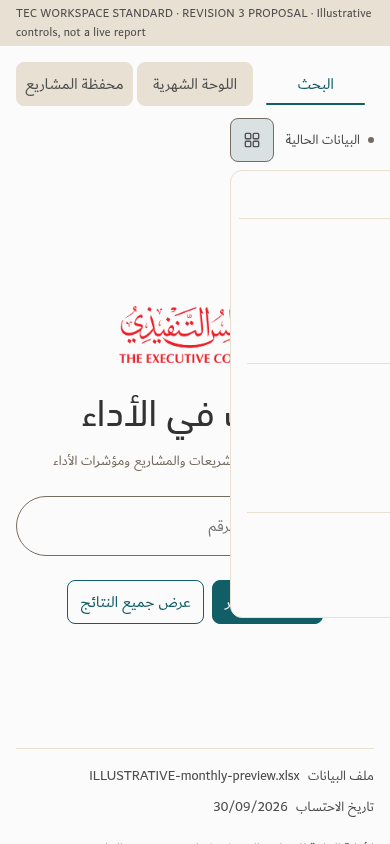